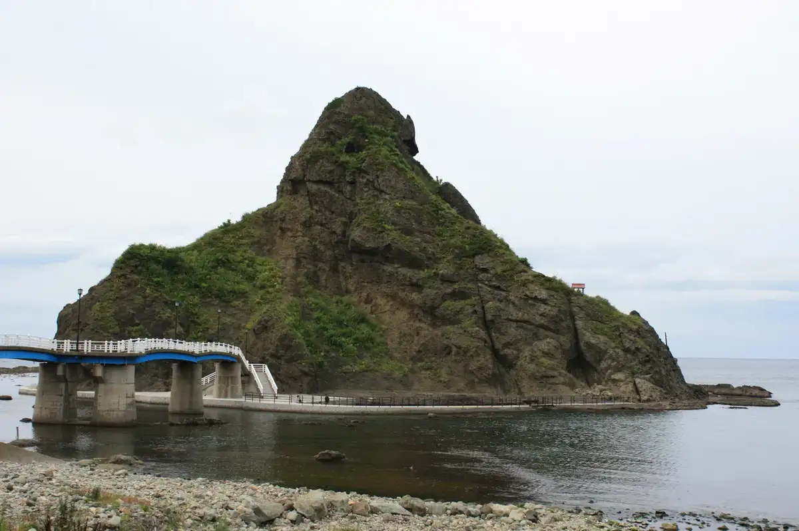
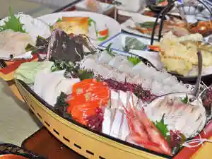
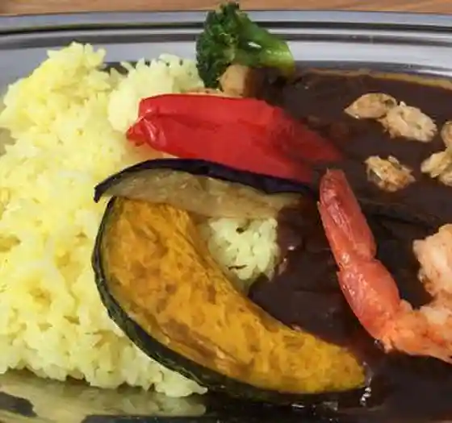
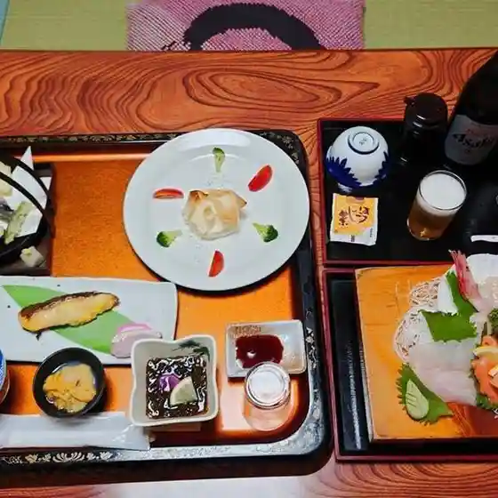
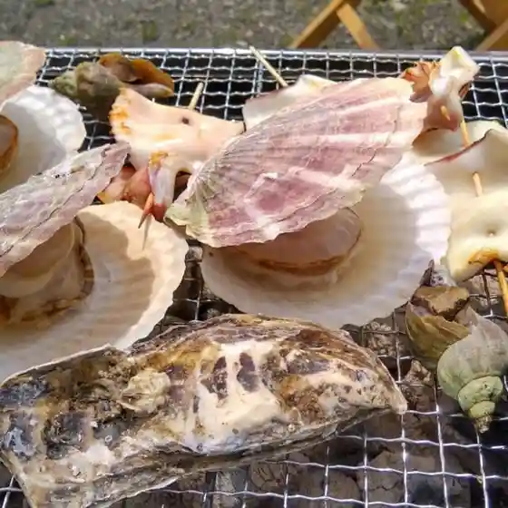

Tomari
Tomari · Hokkaido
Tomari
Highlighted on the Hokkaido map.

Stay
ホテルカルチャーヴィレッジ
Hoterukaruchaavirejji
全室海側の宿 盃温泉 潮香荘

Zenshitsu Umigawa No Yado Hai Onsen Choukou Sou
Dining
さかずきテラス

Sakazuki Terasu
平安荘
Heian Sou
盃温泉 ホテル潮香荘

Hai Onsen Hoteru Choukou Sou
さかずきテラス海の家

Sakazuki Terasu Uminoie